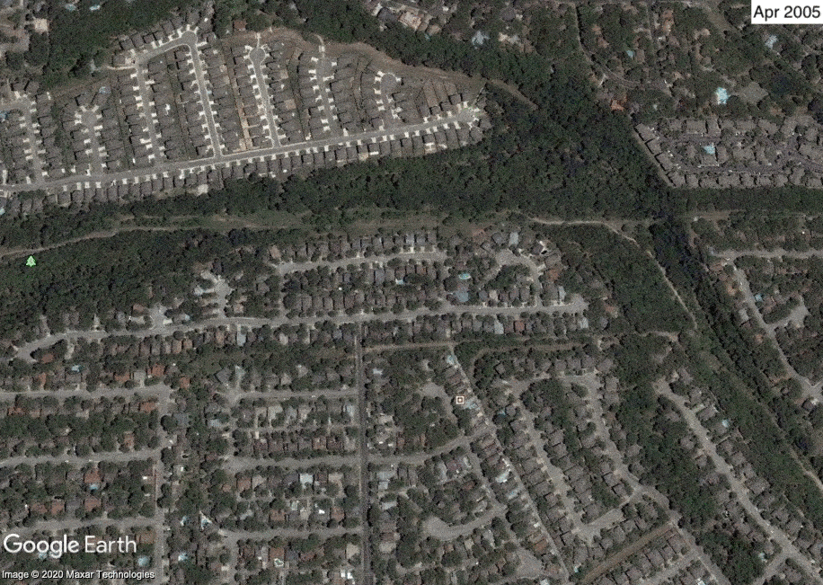
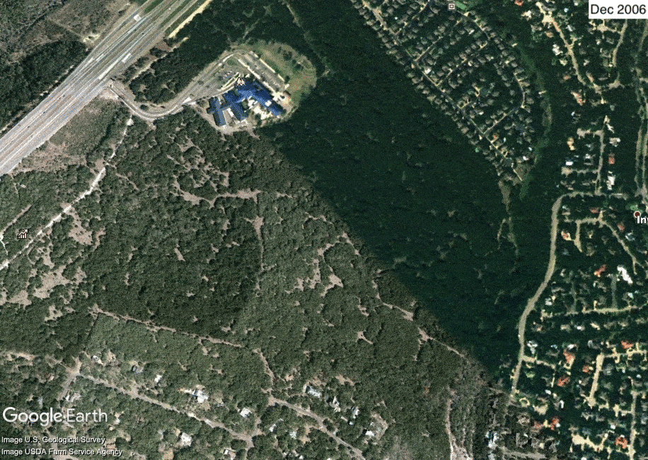
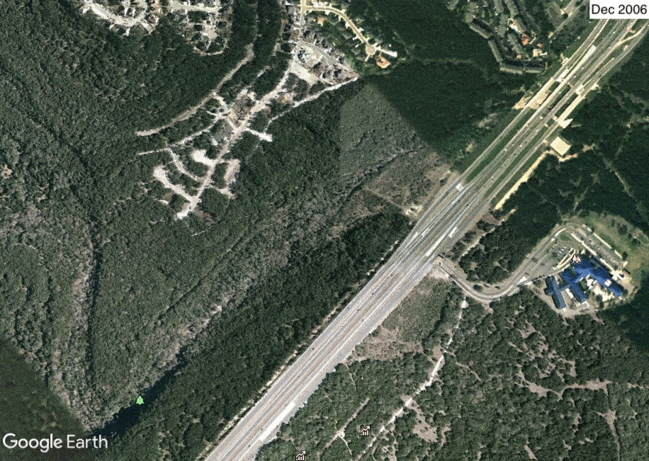

Across the street and 30 seconds away from my childhood home is a green belt that stretches for 4 miles to the north and 15+ miles to the south/east. I have some of the fondest memories of my childhood—from ages 7 to 22—on that four-mile stretch of forest, or "the woods", as we called them.
I went mountain biking daily for years, whether alone or with my father or friends. A select few of my high school cross country teammates would go on training runs. We had airsoft wars and played capture-the-flag and built two impressive (to 7-year-old me) forts. We climbed rock walls. I looked for arrowheads and caught lizards. I went on walks with my family and friends. We played dollar-on-a-string pranks on people and scared people in a gorilla costume. The list goes on.
During some of these memories, I considered the woods my own. We rarely saw people back there that we didn't know. The closest development long-ways (as opposed to short-ways, in which there were housing developments on either side, hence the name green belt) was an old farmhouse a half-mile away by unused road. It was a sanctuary within suburbia that many didn't know about and those that did chose not to visit. It was mine (read: ours—I had plenty of friends who played back there, too).
And then development started. The city was beginning to enact its grand vision of having a trail that looped the city. They cleared a 10-ft path a mile long, laid rebar, and ensured my original sanctuary's death sentence with the pouring of concrete. The masses began flooding in once it dried and the new trail was announced: walkers, running, cyclists, mountain bikers. While the deer trails remained mostly untouched, that section of the green belt has lost its allure of secrecy and possession. Now it was everyone's.
Yet I still had the rich swathe of land and trails a mile north of my house. It had everything I needed for mountain biking: rocks, dirt, ladder bridges, a teeter totter, fast and flowy, slow and technical, drops. I could ride out there forever without seeing or hearing any type of civilization—person, structure, or otherwise. It was a retreat from the stress and fast pace of my life of constant homework and social obligations. I made memories with friends and my father in the blistering December winds, the warm July golden hours, and every season in between.
And then development continued. The city continued its grand vision of having a trail that looped the city. They cleared a 10-ft path two miles long, laid rebar, and ensured my secondary sanctuary's half-death sentence with the pouring of concrete. While the herds thinned out due to there only being one designated parking lot two miles away from the start of that section, it didn't stop the more dedicated trail users from making it out there. (Nor did the trailhead that was built at the end, providing even easier access to that section.) The other half of the death sentence came from an upper-class housing development that fenced off a large amount of trails, effectively cutting the total trail distance in half (or more, I sadly never mapped everything). Trail traffic was bottlenecked into a single path, making the section feel cramped and busy.
Yet I still had the smaller plot of land three miles north of my house. Its mountain biking amenities were lacking compared to miles 1-3, but still offered challenging, technical trails mixed with fun double track. Secret structures were built deep in the forest on trails not obvious to users, providing the forbidden fun that was taken away.
And then development continued. The city continued its grand vision of having a trail that looped the city. They cleared a 10-ft path three miles long, laid rebar, and ensured my tertiary sanctuary's death sentence with the pouring of concrete. Thankfully fewer trails were destroyed in this process, allowing me to hold on to some semblance of what once was.
But the past was gone and with it the trails and feeling of home of my childhood, never to return. It was replaced by the concrete path that to some symbolized growth—growth of the city, of people improving themselves—but to me symbolized destruction. Destruction of what was the last bastion of wilderness within an ever-growing city, a place that finally succumbed to bulldozers in the name of progress, consumerism, the common denominator, and people in office who will never step foot on that trail nor realize the value of what was lost in the process.